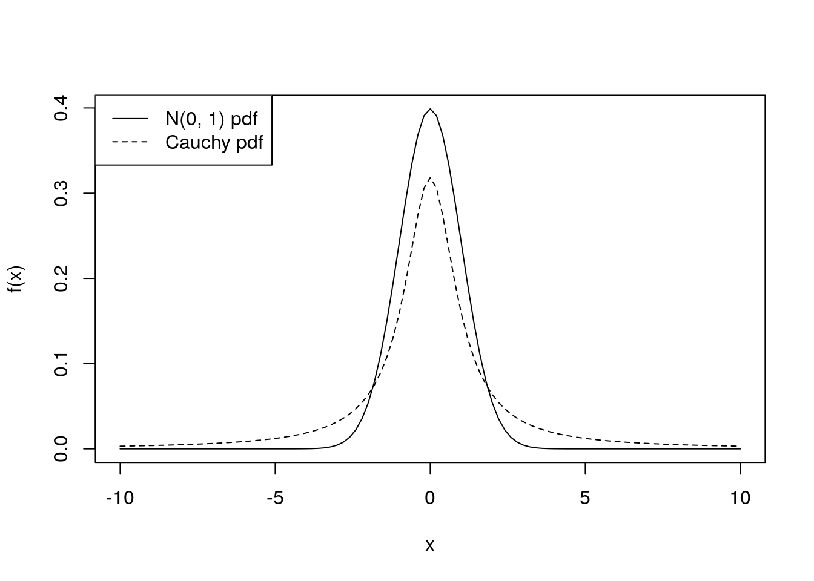
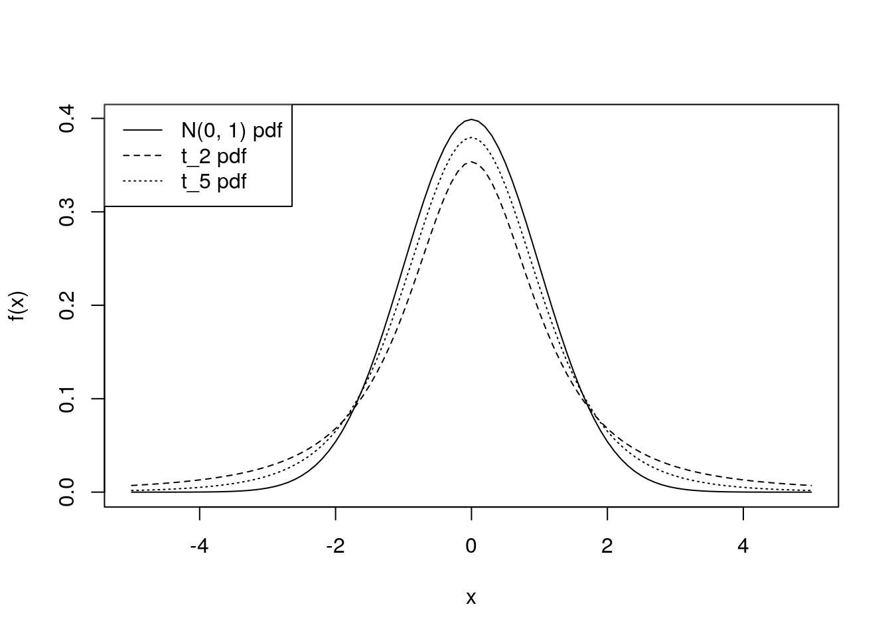

Chapter 9 Bivariate transformations
9.1 The transformation theorem
In Chapter 7 we considered transformations of a single random variable. In this chapter we will generalise to the case of transforming two random variables. As examples we will derive several important distributions distributions – the beta, Cauchy, \(t\) and \(F\) distributions.
We have already seen in Theorem 7.1 how to find the pdf of a one-to-one transformation of a random variable. We extend this result to find the pdf for a transformation of two random variables.
In addition to finding the inverse transformation, and using this in Theorem 9.1, we need to identify the domain of \(U_1\) and \(U_2\). We identify constraints on \(U_1\) and \(U_2\) in two passes, to double check we haven’t missed any constraints:
- forward pass: plug in constraints on \(Y_1\) and \(Y_2\) directly into the definition of \(U_1\) and \(U_2\).
- backward pass: rewrite the constraints on \(Y_1\) and \(Y_2\) in terms of \(U_1\) and \(U_2\), by using the inverse transformation, and rearrange to derive additional constraints on \(U_1\) and \(U_2\).
We will work through several examples to see how this works.
9.2 The beta distribution
Proof. To show this, we would like to use Theorem 9.1. In order to do this, we first need to define another random variable \(U_2\), which is another transformation of \(Y_1\) and \(Y_2\). Here we will choose \(U_2 = Y_1 + Y_2\), but many other choices would work too. We will derive the joint pdf of \(U_1\) and \(U_2\), then integrate this to find the marginal pdf of \(U_1\), which we hope will be a \(\text{beta}(m, n)\) pdf.
The joint pdf of \(Y_1\) and \(Y_2\) is \[f(y_1, y_2) = \frac{\beta^m}{\Gamma(m)} y_1^{m-1} e^{-\beta y_1} \cdot \frac{\beta^n}{\Gamma(n)} y_2^{n-1} e^{-\beta y_2},\] for \(y_1 > 0\), \(y_1 > 0\), since \(Y_1\) and \(Y_2\) are independent.
The inverse transformations are \[Y_1 = U_1 U_2, \quad Y_2 = U_2 - U_1U_2 = U_2(1 - U_1).\] We know that \(Y_1 > 0\) and \(Y_2 > 0\). First, we derive the domain of \((U_1, U_2)\):
- Forward pass: \(U_1 = Y_1/(Y_1 + Y_2) > 0\), \(U_2 = Y_1 + Y_2 > 0\).
- Backward pass: The inverse transformation gives us \(Y_1 = U_1 U_2 > 0\), which gives us no additional information as we already know \(U_1 > 0\) and \(U_2 > 0\). We also get \(Y_2 = U_2(1 - U_1) > 0\), so \(U_2 > U_1 U_2\), so \(U_1 < 1\). We could have already seen this on the forward pass, but the backward pass is useful to catch any constraints we missed on the forwards pass.
The domain is \(0 < U_1 < 1\) and \(0 < U_2 < \infty\).
The Jacobian is \[ \bm J = \begin{pmatrix} \frac{\partial y_1}{\partial u_1} & \frac{\partial y_1}{\partial u_2} \\ \frac{\partial y_2}{\partial u_1} & \frac{\partial y_2}{\partial u_2} \end{pmatrix} = \begin{pmatrix} u_2 & u_1 \\ -u_2 & 1 - u_1 \end{pmatrix}, \] so \[\det{\bm J} = u_2(1 - u_1) + u_1 u_2 = u_2 > 0\]
Therefore, by Theorem 9.1, the joint pdf of \(U_1\) and \(U_2\) is \[\begin{align*} g(u_1, u_2) &= f(y_1, y_2) \times \big |\det J \big| \\ &= \frac{\beta^m}{\Gamma(m)} (u_1 u_2)^{m-1} e^{-\beta u_1 u_2} \cdot \frac{\beta^n}{\Gamma(n)} \left[u_2(1 - u_1)\right]^{n-1} e^{-\beta u_2(1 - u_1)} \cdot u_2 \\ &= \frac{1}{\Gamma(m)\Gamma(n)} u_1^{m-1} (1 - u_1)^{n-1} \beta^{m + n} u_2^{m + n - 1} e^{-\beta u_2}, \end{align*}\]for \(0 < u_1 < 1\) and \(u_2 > 0\). Note that \(g(.,.)\) factorises into a term involving only \(u_1\) and a term only involving \(u_2\). This means that \(U_1\) and \(U_2\) are independent.
We could find the marginal pdf of \(U_1\) by integrating \(g(u_1, u_2)\) over \(u_2\). In this case the marginal pdf of \(U_1\) can be obtained more simply. Gathering together all terms in \(g(u_1, u_2)\) depending on \(u_2\), we find \[g_2(u_2) \propto u_2^{m + n - 1} e^{-\beta u_2}, \quad u_2 > 0,\] i.e. \[g_2(u_2) = c u_2^{m + n - 1} e^{-\beta u_2}\] for some constant \(c\) which will ensure \(g_2(.)\) integrates to one. We recognise this as the form of a \(\text{gamma}(m + n, \beta)\) distribution, so \[g_2(u_2) = \frac{\beta^{m+n}}{\Gamma(m + n)} u_2^{m + n - 1} e^{-\beta u_2}.\] So \[\begin{align*} g_1(u_1) &= \frac{g(u_1, u_2)}{g_2(u_2)} \quad \text{as $U_1$, $U_2$ independent} \\ &= \frac{\Gamma(m + n)}{\Gamma(m) \Gamma(n)} u_1^{m-1} (1 - u_1)^{n-1} \\ &= \frac{1}{B(m, n)} u_1^{m-1} (1 - u_1)^{n-1} \quad 0 < u_1 < 1, \end{align*}\] so \(U_1 \sim \text{beta}(m+n)\).9.3 The Cauchy distribution
While the Cauchy distribution looks relatively innocuous — it is symmetric around zero, just like a standard Normal distribution — the thickness of its tails means that its moments do not exist (the required integrals do not converge).
curve(dnorm(x), from = -10, to = 10, xlab = "x", ylab = "f(x)")
curve(1/(pi*(1 + x^2)), add = TRUE, lty = 2)
legend("topleft", lty = c(1, 2),
legend = c("N(0, 1) pdf", "Cauchy pdf"))
We obtain the Cauchy distribution as the ratio of standard normal random variables:
Proof. Again, in order to use Theorem 9.1 to show this, we need to first define a second random variable \(U_2\). We will choose \(U_2 = Y_2\).
By independence, the joint pdf of \(Y_1\) and \(Y_2\) is \[\begin{align*} f(y_1, y_2) &= \frac{1}{\sqrt{2 \pi}} \exp\left(-\frac{y_1^2}{2}\right) \frac{1}{\sqrt{2 \pi}} \exp\left(-\frac{y_2^2}{2}\right) \\ &= \frac{1}{2 \pi} \exp \left(-\frac{y_1^2 + y_2^2}{2} \right), \quad y_1, y_2 \in \mathbb{R}. \end{align*}\]The inverse transformations are \[Y_1 = U_1 U_2, \quad Y_2 = U_2,\] and the domain of \(U_1\) and \(U_2\) is clearly \(U_1 \in \mathbb{R}\), \(U_2 \in \mathbb{R}\).
The Jacobian matrix is \[\bm J = \begin{pmatrix} u_2 & * \\ 0 & 1 \end{pmatrix},\] where we do not need to evaluate the top right entry marked \(*\), because it will not affect the determinant of \(\bm J\). So \(\det(\bm J) = u_2\).
So the joint pdf of \(U_1\) and \(U_2\) is \[\begin{align*} g(u_1, u_2) &= \frac{1}{2 \pi} \exp \left(-\frac{u_1^2 u_2^2 + u_2^2}{2} \right) \cdot |u_2| \\ &= \frac{|u_2|}{2 \pi} \exp \left(-\frac{u_2^2(1 + u_1^2)}{2} \right) \end{align*}\]for \(u_1, u_2 \in \mathbb{R}\).
We integrate out \(u_2\) in order to obtain the marginal pdf of \(U_1\) \[\begin{align*} g_1(u_1) &= \int_{-\infty}^\infty g(u_1, u_2) du_2 \\ &= \frac{1}{2 \pi} \int_{-\infty}^\infty |u_2| \exp \left(-\frac{u_2^2(1 + u_1^2)}{2} \right) du_2 \\ &= 2 \times \frac{1}{2 \pi} \int_{0}^\infty u_2 \exp \left(-\frac{c u_2^2}{2} \right) du_2, \; \text{with $c = 1 + u_1^2$} \\ &= \frac{1}{\pi} \left[-\frac{1}{c} \exp\left(-\frac{c u_2^2}{2}\right)\right]_0^\infty \\ &= \frac{1}{\pi} \cdot \frac{1}{c} \\ &= \frac{1}{\pi (1 + u_1)^2}, \quad u_1 \in \mathbb{R}, \end{align*}\] which is the Cauchy pdf, so \(U_1\) has Cauchy distribution, as required.9.4 The \(t\) distribution
We can plot the pdfs of the \(t\) distribution with \(2\), and \(5\) degrees of freedom, compared with the \(N(0, 1)\) pdf.
curve(dnorm(x), from = -5, to = 5, xlab = "x", ylab = "f(x)")
curve(dt(x, df = 2), add = TRUE, lty = 2)
curve(dt(x, df = 5), add = TRUE, lty = 3)
legend("topleft", lty = c(1, 2, 3),
legend = c("N(0, 1) pdf", "t_2 pdf", "t_5 pdf"))
The \(t_k\) distribution has heavier tails than the \(N(0, 1)\) distribution, but as \(k \rightarrow \infty\), \(t_k \rightarrow N(0, 1)\). When \(k=1\), the \(t_1\) distribution is the Cauchy distribution.
We obtain the \(t\) distribution as a ratio of a standard normal random variable, and the square root of a chi-squared random variable divided by its degrees of freedom. Although this sounds complicated, this makes the \(t\) distribution important in practice, as we will soon see.
Proof. In order to use Theorem 9.1 to show this, we need to first define a second random variable \(U_2\). We will choose \(U_2 = Y_2\).
The pdfs of \(Y_1\) and \(Y_2\) are \[f_1(y_1) = \frac{1}{\sqrt{2 \pi}} \exp\left(\frac{-y_1^2}{2} \right), \quad y_1 \in \mathbb{R}\] and \[f_2(y_2) = \frac{y_2^{k/2 - 1}}{\Gamma(k/2) 2^{k/2}} \exp\left(\frac{-y_2}{2}\right), \quad y_2 > 0.\] So, by independence, the joint pdf of \(Y_1\) and \(Y_2\) is \[f(y_1, y_2) = \frac{1}{\sqrt{2 \pi}} \exp\Big(\frac{-y_1^2}{2} \Big) \frac{y_2^{k/2 - 1}}{\Gamma(k/2) 2^{k/2}} \exp\left(\frac{-y_2}{2}\right), \quad y_1 \in \mathbb{R}, y_2 > 0.\]
The inverse transformations are \[Y_1 = U_1 \sqrt{\frac{U_2}{k}}, \quad Y_2 = U_2,\] and the domain of \(U_1\) and \(U_2\) is \(U_2 \in \mathbb{R}\), \(U_2 > 0\).
The Jacobian is \[\bm J = \begin{pmatrix} \sqrt{\frac{u_2}{k}} & * \\ 0 & 1 \end{pmatrix}, \] so \(\det \bm J = \sqrt{u_2/k} > 0\).
So the joint pdf of \(U_1\) and \(U_2\) is \[\begin{align*} g(u_1, u_2) &= \frac{1}{\sqrt{2 \pi}} \exp\Big(-\frac{u_1^2 u_2}{2 k} \Big) \frac{u_2^{k/2 - 1}}{\Gamma(k/2) 2^{k/2}} \exp\Big(-\frac{u_2}{2}\Big) \sqrt{\frac{u_2}{k}} \\ &= \frac{{u_2}^{(k-1)/2}}{2^{(k+1)/2}\sqrt{\pi} \, \Gamma(k/2) \sqrt{k}} \exp\Big\{-\frac{u_2}{2} \Big(\frac{u_1^2}{k} + 1 \Big)\Big\}, \quad u_1 \in \mathbb{R}, u_2 >0. \end{align*}\] We are interested in the marginal pdf of \(U_1\): \[g_1(u_1) = \frac{1}{2^{(k+1)/2}\sqrt{\pi} \, \Gamma(k/2) \sqrt{k}} \int_0^\infty {u_2}^{(k-1)/2} \exp\Big\{-\frac{u_2}{2} \Big(\frac{u_1^2}{k} + 1 \Big) \Big\} du_2.\] The integrand is proportional to a \(\text{gamma}(\alpha, \beta)\) pdf \[h(u_2) = \frac{\beta^\alpha}{\Gamma(\alpha)} u_2^{\alpha - 1} e^{-\beta u_2}, \quad u_2 > 0, \] if we take \(\alpha = \frac{k+1}{2}\) and \(\beta = \frac{1}{2}\Big(\frac{u_1^2}{k} + 1\Big)\). So \[g_1(u_1) = \frac{1}{2^{(k+1)/2}\sqrt{\pi} \, \Gamma(k/2) \sqrt{k}} \frac{\Gamma((k+1)/2)}{ \left[\frac{1}{2}\big(\frac{u_1^2}{k} + 1\big)\right]^{(k+1)/2}} \int_0^\infty h(u_2) du_2.\] But \(\int_0^\infty h(u_2) du_2 = 1\) and \(\sqrt{\pi} = \Gamma(1/2)\), so \[\begin{align*} g_1(u_1) &= \frac{\Gamma(\frac{k+1}{2})}{\Gamma(\frac{k}{2}) \Gamma(\frac{1}{2})} \frac{\big(1 + \frac{u_1^2}{k} \big)^{-\frac{k+1}{2}}} {\sqrt{k}} \\ &= \frac{1}{\sqrt{k} B\left(\frac{k}{2}, \frac{1}{2}\right)} \Big(1 + \frac{u_1^2}{k} \Big)^{-\frac{k+1}{2}} , \quad u_1 > 0, \end{align*}\] which is the pdf of a \(t_k\) distribution, so \(U_1 \sim t_k\).The importance of the \(t\) distribution in practice comes from the following proposition, which we will use to construct confidence interval and hypothesis tests for the mean of normal random variables in Chapter 11:
9.5 The \(F\) distribution
Proof. Write \(Y_1^* = \frac{Y_1}{m}\) and \(Y_2^* = \frac{Y_2}{n}\), so \(U_1 = Y_1^*/Y_2^*\). In order to use Theorem 9.1, we first need to define a second random variable \(U_2\). We will choose \(U_2 = Y_2^*\).
We have \(Y_1 \sim \chi^2_m \equiv \text{gamma}(m/2, 1/2)\), so by Proposition 6.4 (with b = \(1/m\)) \[Y_1^* = \frac{Y_1}{m} \sim \text{gamma}(m/2, m/2).\] Similarly, \(Y_2^* \sim \text{gamma}(n/2, n/2)\). So the joint pdf of \(Y_1^*\) and \(Y_2^*\) is \[f(y_1^*, y_2^*) = \frac{(\frac{m}{2})^{m/2}}{\Gamma\left(\frac{m}{2}\right)} (y_1^*)^{\frac{m}{2}- 1} e^{-\frac{m}{2} y_1^*} \cdot \frac{(\frac{n}{2})^{n/2}}{\Gamma\left(\frac{n}{2}\right)} (y_2^*)^{\frac{n}{2}- 1} e^{-\frac{n}{2} y_2^*}\] for \(y_1^* > 0\), \(y_2^* > 0\).
The inverse transformation is \(Y_1^* = U_1 U_2\), \(Y_2^* = U_2\). The domain of \(U_1\) and \(U_2\) is \(U_1 > 0\), \(U_2 > 0\). The Jacobian is \[\bm J = \begin{pmatrix} u_2 & * \\ 0 & 1 \end{pmatrix},\] so \(\det{\bm J} = u_2 > 0\). So the joint pdf of \(U_1\) and \(U_2\) is \[\begin{align*} g(u_1, u_2) &= \frac{(\frac{m}{2})^{m/2}}{\Gamma\left(\frac{m}{2}\right)} (u_1 u_2)^{\frac{m}{2}- 1} e^{-\frac{m}{2} u_1 u_2} \cdot \frac{(\frac{n}{2})^{n/2}}{\Gamma\left(\frac{n}{2}\right)} u_2^{\frac{n}{2}- 1} e^{-\frac{n}{2} u_2} \cdot u_2 \\ &= \frac{m^\frac{m}{2} n^\frac{n}{2}} {\Gamma\left(\frac{m}{2}\right)\Gamma\left(\frac{n}{2}\right) 2^{(m+n)/2}} u_1^{\frac{m}{2}- 1} u_2^{\frac{m+n}{2}- 1} e^{-\frac{1}{2}(n + mu_1) u_2}, \end{align*}\]for \(u_1 > 0\), \(u_2 > 0\).
The marginal pdf of \(U_1\) is \[g_1(u_1) = \frac{m^\frac{m}{2} n^\frac{n}{2}} {\Gamma\left(\frac{m}{2}\right)\Gamma\left(\frac{n}{2}\right) 2^{(m+n)/2}} u_1^{\frac{m}{2}- 1} \int_0^\infty u_2^{\frac{m+n}{2}- 1} e^{-\frac{1}{2}(n + mu_1) u_2} du_2.\] The integrand is proportional to a \(\text{gamma}(\alpha, \beta)\) pdf, with \(\alpha = \frac{m+n}{2}\) and \(\beta = \frac{1}{2}(n + mu_1)\): \[h(u_2) = \frac{\left[\frac{1}{2}(n + mu_1)\right]^{\frac{m+n}{2}}} {\Gamma\left(\frac{m+n}{2}\right)} u_2^{\frac{m+n}{2}- 1} e^{-\frac{1}{2}(n + mu_1) u_2}\] so we have \[\begin{align*} g_1(u_1) &= \frac{m^\frac{m}{2} n^\frac{n}{2}} {\Gamma\left(\frac{m}{2}\right)\Gamma\left(\frac{n}{2}\right) 2^{(m+n)/2}} u_1^{\frac{m}{2}- 1} \frac{\Gamma\left(\frac{m+n}{2}\right)} {\left[\frac{1}{2}(n + mu_1)\right]^{\frac{m+n}{2}}} \int_0^\infty h(u_2) du_2 \\ &= \frac{m^\frac{m}{2} n^\frac{n}{2} \Gamma\left(\frac{m+n}{2}\right)} {\Gamma\left(\frac{m}{2}\right)\Gamma\left(\frac{n}{2}\right) }\frac{u_1^{\frac{m}{2}- 1}}{(n + mu_1)^{\frac{m+n}{2}}} \\ &= \frac{m^\frac{m}{2} n^\frac{n}{2}} {B\left(\frac{m}{2}, \frac{n}{2}\right)} \frac{u_1^{\frac{m}{2}- 1}}{(n + mu_1)^{\frac{m+n}{2}}}, \quad u_1 > 0, \end{align*}\] which is the pdf of a \(F_{m, n}\) distribution, so \(U_1 \sim F_{m, n}\).